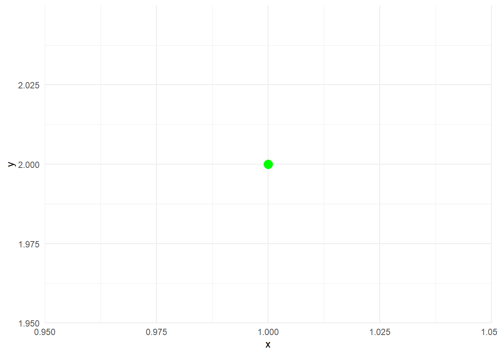

# tipos de datos
x <- 56 #Numeric
y <- "hola" # Character
z <- TRUE #Logical
x <- factor("hombre") #Factor
fecha1 <- as.Date("1990-08-07") #DateR apuntes
R studio.
En este resumen se indica que podemos hacer con R studio desde lo básico hasta lo visto en las clases.
#TIPOS DE DATOS.
En R tenemos diferentes tipos de datos los cuales se puede observar a continuación.
Como se debe cambiar de un tipo de dato tipo fecha numérico, para realizar ese cambio se lo realiza con el comando as.tipo_archivo ejemplo: si quiero cambiar el resultado de fecha a numérico para realizar el calculo de años se realiza la siguiente operación.
fecha1 <- as.Date("1990-08-07")
fecha2 <- as.Date("2023-10-24")
tiempovida = fecha2 - fecha1
#Change type of Data Date to numeric
anios = as.numeric(tiempovida) %/% 365
días = as.numeric(tiempovida) %% 365
anios[1] 33días[1] 86OPERACIONES BÁSICAS EN R
Para realizar las operaciones básicas en r se utilizan la siguente nomenclatura.
| Operación | Comando | Operación | Comando |
|---|---|---|---|
| Suma | + | EXPONENCIAL | ^ |
| Resta | - | EXPONENCIAL | ** |
| Multiplicación | * | Módulo | %% |
| División | / | Div. Entera | %/% |
Estas operaciones también se puede ejecutar para matrices, vectores, listas teniendo presente la tabla siguiente.
| Operación | Comando |
|---|---|
| MULTIPLICACIÓN MATRICIAL | %*% |
| PRODUCTO EXTERIOR | %o% |
| PRODUCTO KRONECKER | %x% |
Se recuerda que también existe aquí la jerarquía de las operaciones que si no recuerdan es la siguiente.
# 1) MULTIPLICACIÓN DIVISIÓN SUMA RESTA.
4*6/2+2-3 # (4*6)=24 /2= 12 + 2 =14 -3 =11[1] 11Para ejecutar las operaciones se puede realizar conforme se muestra al código siguiente.
40+50[1] 9040-20[1] 204*2[1] 820/4[1] 521%%5 # 21 /5 sería 4 entero y 1 será residuo = el resultado que entraga la operación es 1[1] 121 %/%5 # a diferencia del anterior entregará el valor entero.[1] 4Operaciones Básicas en vectores.
Para realizar operaciones básicas en los vectores, primero debemos partir desde la creación de los mismos, ya sea de 1 dimensión, 2, 3 dimesiones, matriz, listas.
Empeceremos a la asignación de valor a una variable.
#Para asignar un dato a una variable se lo realiza con el comando <- ejemplo:
a <- 20 # a la variable a tendrá un valor de 20.
b <- "luis" #el valor de b tendrá una cadena de dato "luis"
#para imprimir esta cadena llamamos directamente a la variable.
a[1] 20b[1] "luis"Ahora para vamos a crear un vector
#Para crear un vector se recuerda que tienen sus dimensiones x|y|z,
vector1d <- c(1)
vector2d <- c(1, 2)
vector3d <- c(1, 2, 3)
#Para crear la imagen del vector 3d se puede realizar con los siguientes comandos.
library(ggplot2)
# Crear un data frame con el valor
vector1 <- data.frame(x = vector3d[1], y = vector3d[2], z= vector3d[3])
# Crear el gráfico con el punto de color verde
ggplot(vector1, aes(x, y, z)) +
geom_point(color = "green", size = 4) +
theme_minimal() # Opcional: Establece un tema si lo deseas
# Para que la grafica se vea mejor se puede trazar lineas desde un origen 0.0.0
library(plotly)
Attaching package: 'plotly'The following object is masked from 'package:ggplot2':
last_plotThe following object is masked from 'package:stats':
filterThe following object is masked from 'package:graphics':
layoutVector_grafico <- data.frame(x = c(0, 1), y = c(0, 2), z = c(0, 3))
plot_ly(data = Vector_grafico, x = ~x, y = ~y, z = ~z, type = "scatter3d", mode = "lines", line = list(color = "green", width = 4)) %>%
layout(scene = list(aspectmode = "cube"))Para realizar las operaciones con vectores se puede realizar de la siguiente manera.
x <- c(1, 7, 3)
y <- c(9, 4, 5)
# suma de vectores
x +y#[(1+9),(7+4),(3+5)][1] 10 11 8# resta de vectores
x-y# [(1-9),(7-4),(3-5)][1] -8 3 -2# multiplicacion de vectores
x*y# [(1-9),(7-4),(3-5)][1] 9 28 15# division de vectores
x/y[1] 0.1111111 1.7500000 0.6000000x/2 # 0.5 3.5 1.5[1] 0.5 3.5 1.5# Cada elemento del primer vector elevado
# al elemento correspondiente del segundo
x ** y # 1 2401 243 [1] 1 2401 243x ^ y # 1 2401 243[1] 1 2401 243x %% y # 1 3 3[1] 1 3 3x %/% y # 0 1 0[1] 0 1 0OPERADORES LÓGICOS.
# & AND ---- | OR --- ! NOT --- xor() Exclusión ‘OR’ elemento a elemento equivalente a !( x | y)
# en vectores es && AND --- || OR ---
TRUE & FALSE[1] FALSEFALSE | TRUE[1] TRUEVariables utilizadas.
A lo largo de la lectura hemos asignado varios valores a diferentes variables pero como puedo conocer estas variables en un script extenso, de la siguiente manera.
#asignar datos a una variables| assign("variable",valor)
assign("j",200)
j[1] 200#conocer si existe la variable| exist("variable")
exists("j")[1] TRUE# si quiero eliminar ("variable")
rm("y")
# conocer las variables que tengo asignadas.
ls() [1] "a" "anios" "b" "días"
[5] "fecha1" "fecha2" "has_annotations" "j"
[9] "tiempovida" "Vector_grafico" "vector1" "vector1d"
[13] "vector2d" "vector3d" "x" "z" #si quiero eliminar todas las variables ("rm (todas las variables)")
rm(list=ls())Matrices
Como crear las matrices.
datos <- c(1, 3, 7, 8) # los guardamos en una lista
datos[1] 1 3 7 8length(datos) # longitud del vector[1] 4matrix(datos, nrow = 2, ncol = 2) [,1] [,2]
[1,] 1 7
[2,] 3 8# si se crea la matriz sin indicar parámetros creará en una columna.
matrix(datos) [,1]
[1,] 1
[2,] 3
[3,] 7
[4,] 8##### CONCATENAR INFORMACIÓN
x <- c(2, 7, 3, 6, 1)
y <- c(TRUE, FALSE, 3, 5, TRUE)
# POR COLUMAS.
cbind(x, y) # x será la columna 1, Y la columna 2. # tienen que tener la misma cantidad de datos. x y
[1,] 2 1
[2,] 7 0
[3,] 3 3
[4,] 6 5
[5,] 1 1# Por filas
rbind(x, y) # x será la fila 1, Y la fila 2. # tienen que tener la misma cantidad de datos. [,1] [,2] [,3] [,4] [,5]
x 2 7 3 6 1
y 1 0 3 5 1# Clase de la salida
class(cbind(x, y)) # "matrix"[1] "matrix" "array" typeof(cbind(x, y)) # "double"[1] "double"a <- matrix(cbind(x, y), ncol = 2)
a [,1] [,2]
[1,] 2 1
[2,] 7 0
[3,] 3 3
[4,] 6 5
[5,] 1 1dim(a) # 6 2[1] 5 2Operadores de comparación
# OPERADORES DE COMPARACIÓN
# > Mayor que
# < Menor que
# >= Mayor o igual que
# <= Menor o igual que
# == Igual a
# != Distinto aFunciones
############ FUNCIONES
# IF
x <- 10
y <- 11
if(x + y > 20) {
print("Correcto")
} else {
print("Incorrecto")
}[1] "Correcto"